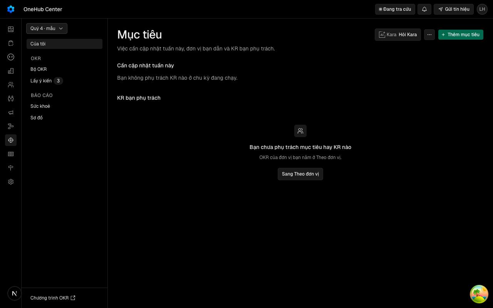
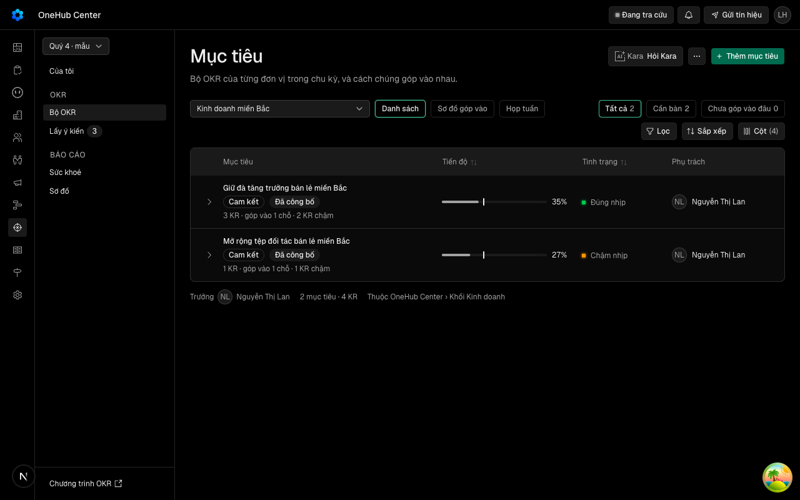
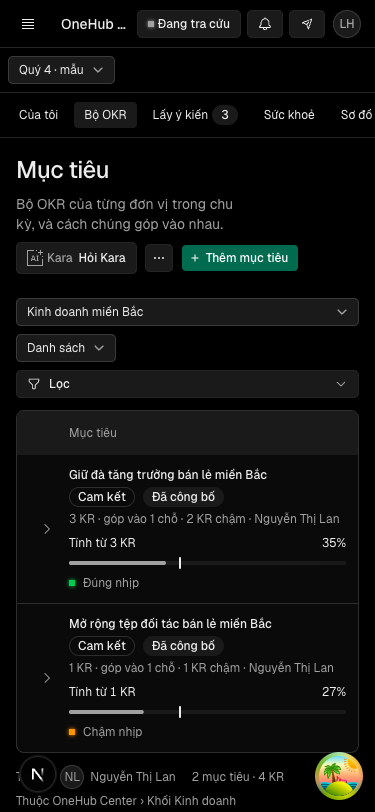
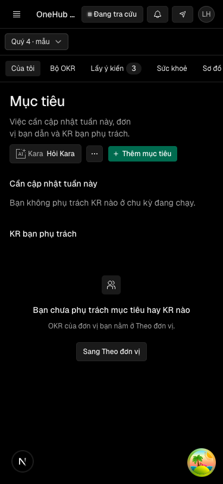
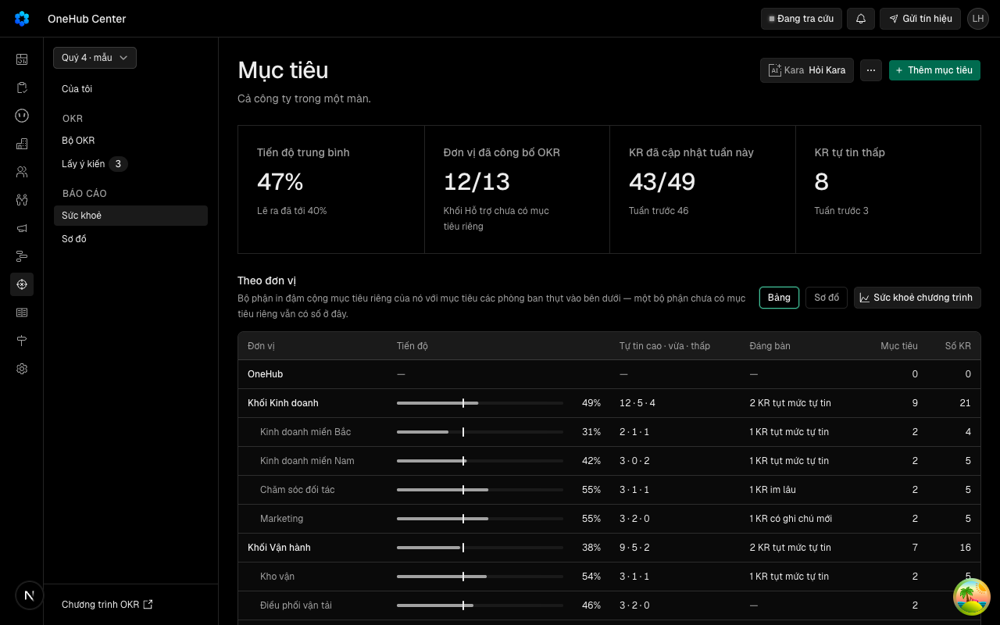
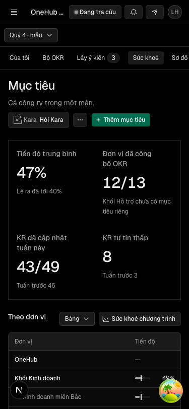

Trưởng đơn vị mở Mục tiêu và đi giữa Của tôi, Bộ OKR, Lấy ý kiến và Báo cáo bằng một thanh bên, chu kỳ chọn một lần ở đầu thanh, và mọi đường dẫn cũ vẫn mở đúng chỗ
Vì sao làm
Hôm nay trang đơn vị có ba lớp điều khiển ngang chồng nhau; ô chu kỳ lẫn giữa các nút hành động; chia theo phạm vi (của tôi · đơn vị · cả công ty) làm người dùng không biết một mục nói về bộ OKR hay số liệu. Tability chia theo việc và vật, phạm vi là bộ lọc trong trang.
Đã hứa
- AC-1 — (cross-layer) Given một người mở bất kỳ màn nào của khu Mục tiêu ở máy tính, When thanh bên dựng, Then nó là `aside[data-slot=area-sidebar]` nhãn «Mục tiêu» với đúng ba nhóm theo thứ tự — nhóm không nhãn (Của tôi → `/okr`), «OKR» (Bộ OKR → `/okr/bo-okr`, Lấy ý kiến → `/okr/lay-y-kien`), «Báo cáo» (Sức khoẻ → `/okr/suc-khoe`, Sơ đồ → `/okr/so-do`); đúng một mục sáng theo đường đang mở, kể cả đường con (`/okr/so-do/muc-tieu/<id>` sáng Sơ đồ); mục Lấy ý kiến mang số ý kiến cần góp khi số đó lớn hơn 0; chân thanh có «Chương trình OKR» → `/settings/okr` cho người quản lý chương trình và không có cho vai khác.
- AC-2 — Given một màn của khu, When người đổi chu kỳ, Then ô chu kỳ nằm ở đầu thanh bên (giữ `data-chon-chu-ky`), không còn trong hàng nút hành động của trang; chu kỳ vừa chọn ghi vào `kyOkr` và mọi liên kết mục trên thanh bên mang theo `kyOkr` ấy, nên bấm sang mục khác vẫn xem cùng chu kỳ.
- AC-3 — Given trang Bộ OKR của một đơn vị, When trang dựng, Then trên trang chỉ còn một lớp thẻ ngang — chuyển kiểu xem `xemOkr` (danh sách · cây · họp tuần · chấm điểm) — và không màn nào của khu còn dựng thanh thẻ Của tôi · Theo đơn vị · Toàn cảnh · Hỏi ý.
- AC-4 — Given năm đường mới, When mở, Then `/okr/bo-okr` dựng trang đơn vị như `/okr/theo-don-vi` hôm nay, `/okr/lay-y-kien` dựng trang Hỏi ý, `/okr/suc-khoe` dựng nội dung Toàn cảnh và, cho người quản lý chương trình, phần quản trị chương trình ở mục `#chuong-trinh`, `/okr/so-do` dựng Sơ đồ góp vào cả công ty theo chu kỳ, `/okr/so-do/muc-tieu/<id>` dựng sơ đồ quanh một mục tiêu với nút quay lại trỏ `/okr/so-do`.
- AC-5 — Given cấu hình `next.config.ts`, When đọc `redirects()` và `rewrites()`, Then mỗi đường cũ có đúng một quy tắc chuyển vĩnh viễn tới đích mới — `/okr/theo-don-vi` → `/okr/bo-okr`, `/okr/hoi-y` → `/okr/lay-y-kien`, `/okr/toan-canh` → `/okr/suc-khoe`, `/okr/toan-canh/suc-khoe` → `/okr/suc-khoe#chuong-trinh`, `/okr/quanh-muc-tieu/:id` → `/okr/so-do/muc-tieu/:id`, `/okr/cap-nhat-tuan` → `/okr` — và mỗi đường mới ngoài `/okr/so-do` có đúng một rewrite về thư mục route cũ; không đích nào của redirect là nguồn của redirect khác.
- AC-6 — Given cây đang chạy, When mở các liên kết cũ thật — `/okr/theo-don-vi?donOkr=pb:<id>&xemOkr=hop-tuan&kyOkr=<id>` (tin tóm tắt), `/okr/hoi-y?kyOkr=<id>` (tin nhắc ý kiến), `/okr/toan-canh?kyOkr=<id>`, `/okr/toan-canh/suc-khoe`, `/okr/quanh-muc-tieu/<id>`, `/okr?tu=nhac`, `/okr?record=objective:<id>`, `/okr/soan/<id>` — Then mỗi liên kết dừng ở đúng đường mới với mọi tham số truy vấn giữ nguyên sau nhiều nhất một lần chuyển, đúng mục thanh bên sáng, và màn đích hiện đúng thứ liên kết hứa (họp tuần của đơn vị ấy, phiên cập nhật tuần mở sẵn, ngăn mục tiêu mở sẵn).
- AC-7 — Given `apps/app` (trừ `test/`, `app/proto/` và danh sách chuyển hướng của `next.config.ts`), When quét, Then không chuỗi đường nào còn trỏ `/okr/theo-don-vi`, `/okr/toan-canh`, `/okr/hoi-y` hay `/okr/quanh-muc-tieu` — liên kết trong ứng dụng đi thẳng đường mới, không qua chuyển hướng.
- AC-8 — Given màn Của tôi của người dẫn đơn vị, When cây tổ chức (`org.tree`) đang tải hoặc tải lỗi, Then khối «Đơn vị bạn dẫn» hiện khung chờ khi đang tải và `LoiPhan` có nút Thử lại khi lỗi; không thẻ nào có tiêu đề rỗng; bấm Thử lại thì tải lại cây.
- AC-9 — Given điện thoại 375×812, When mở Của tôi, Bộ OKR và Sức khoẻ, Then không thấy thanh dọc, thấy ô chu kỳ trên một hàng cuộn ngang gồm năm mục, mục đang mở sáng, không nhãn nhóm, không «Chương trình OKR», và trang không tràn ngang; kèm ảnh cho người xem.
- AC-10 — Given các lối vào sẵn có của khu, When dùng sau vòng này, Then hành vi giữ nguyên: `?tu=nhac` mở phiên cập nhật tuần rồi xoá tham số, `?record=objective:<id>` mở ngăn mục tiêu, Lấy ý kiến không mang `kyOkr` vẫn mặc định chu kỳ đang lập kế hoạch còn các mục khác mặc định chu kỳ hiện hành, và vai chỉ OKR vẫn vào được mọi mục của thanh.
Thiết kế
docs/superpowers/specs/2026-10-19-vo-khu-muc-tieu-design.md
Quyết định
- 2026-10-19 · Máy · approach · S1 — Đường mới bằng rewrites, đường cũ bằng redirects trong next.config.ts; không dời thư mục route của khu.42 hồ sơ đã ký trỏ paths và thước vào okr/theo-don-vi/**, okr/toan-canh/**; dời thư mục làm chết paths của chúng.
- 2026-10-19 · Máy · approach · S1 — Đường mới theo tên mục: /okr/bo-okr, /okr/lay-y-kien, /okr/suc-khoe, /okr/so-do; Của tôi giữ /okr.CONTEXT.md chốt tên mục và ghi đường hoi-y chỉ giữ tới khi khu đổi đường dẫn.
- 2026-10-19 · Máy · descope · S1 — KHÔNG đưa Mọi KR và Cập nhật gần đây lên thanh bên ở vòng này.Câu giao liệt đúng Của tôi, Bộ OKR, Lấy ý kiến và Báo cáo; hai màn kia chưa có (VK11, VK12).
- 2026-10-19 · Máy · approach · S1 — Sức khoẻ gộp nội dung Toàn cảnh và phần quản trị chương trình (mục #chuong-trinh, chỉ người quản lý); /okr/toan-canh/suc-khoe chuyển về đó.CONTEXT.md định nghĩa Sức khoẻ gồm cả phần quản trị.
- 2026-10-19 · Máy · approach · S1 — Sơ đồ là Sơ đồ góp vào cả công ty theo chu kỳ; trang quanh một mục tiêu nằm dưới /okr/so-do/muc-tieu/<id>.CONTEXT.md ghi mục Sơ đồ hôm nay chứa Sơ đồ góp vào; khung toàn vùng là VK6.
- 2026-10-19 · Máy · descope · S1 — KHÔNG đổi đường dẫn apps/agent ghép vào tin nhắc email, Zalo, Slack; tin đi qua chuyển hướng.Tin đã gửi mang đường cũ nên chuyển hướng phải có dù builder đổi hay không; chữ máy trong tin nhắc là VK5.
- 2026-10-19 · Máy · approach · S1 — Liên kết mục trên thanh bên mang kyOkr chỉ khi đường đang có kyOkr; mỗi màn giữ chu kỳ mặc định của mình.Lấy ý kiến mặc định chu kỳ đang lập kế hoạch (giaiKyHoiY, bài đã ký okr-giai-ky-an.spec.ts).
- 2026-10-19 · Máy · approach · S1 — Gỡ các ca đo thanh thẻ ngang Của tôi · Theo đơn vị · Toàn cảnh · Hỏi ý khỏi bài kiểm và thước của hồ sơ đã ký (okr-thanh-tab.dom.tsx, okr-dau-trang-khu.dom.tsx, phần thẻ của khung-okr-truoc-r1.dom.tsx, soan-okr-song-lai.spec.ts, thước data-khung-tab của dot-hoi-y-tuong-okr và khung-man-chung), mỗi hồ sơ ghi dòng sổ fix decided_by chủ kho.Ngưỡng đòi trang đơn vị chỉ còn một lớp thẻ ngang, mà luật tạm 18/10 cấm thợ tự sửa thước hồ sơ đã ký.
- 2026-10-19 · Máy · descope · S1 — bỏ design-pass — bản mẫu bấm được /proto/vo-khu-muc-tieu (2790552ac) đã là đầu vào Cổng Phạm vi theo luật 23 của đợt.Luật 23 của đợt chỉ định bản mẫu làm đầu vào thiết kế; VK10 mới qua design-pass.
- 2026-10-19 · Máy · approach · S1 — Chân thanh «Chương trình OKR» chỉ hiện cho người quản lý chương trình./settings/okr chỉ mở cho người quản lý chương trình; vai khác bấm vào sẽ gặp màn hết quyền.
- 2026-10-19 · Người (Phan Le Manh) · approach · gate1 — Hỏi-1: cho gỡ đúng các ca đo thanh thẻ ngang khỏi bài kiểm và thước của hồ sơ đã ký, mỗi hồ sơ một dòng sổ fix mang tên chủ kho, rồi ghim lại chung.người chọn ở Cổng Phạm vi: duyệt hay sửa: duyệt (nhận khuyến nghị của dòng d-20261019T170009Z-8).
- 2026-10-19 · Người · seal · gate1 —
- 2026-10-19 · Máy · fix · S2 — Dòng chuyển hướng cũ /okr/cap-nhat-tuan → /okr giữ nguyên permanent: false; năm dòng mới của vòng là permanent.Bài đã ký okr-chuyen-huong-cap-nhat.spec.ts đo dòng ấy (E11 chạy nó nguyên vẹn); AC-5 liệt nó trong danh sách vĩnh viễn là sai một chữ.
- 2026-10-19 · Người (Phan Le Manh) · approach · gate1 — Hỏi-2: cho đổi đúng chuỗi đường cũ thành đường mới (và ca thẻ Hỏi ý, thẻ đang chọn, điều kiện chờ tabs-list) trong khẳng định bài đã ký của khu Mục tiêu, không đổi logic thước; mỗi hồ sơ đo hai chiều và ghi dòng sổ fix; E11 đổi thành «xanh sau khi đổi đúng chuỗi đường».người chọn sau Cổng Phạm vi: Hỏi-2: cho đổi đúng chuỗi đường và ca thanh thẻ
- 2026-10-20 · Máy · approach · S1 — Sức khoẻ gộp nội dung Toàn cảnh và phần quản trị chương trình (mục #chuong-trinh, chỉ người quản lý); /okr/toan-canh/suc-khoe chuyển về đó.CONTEXT.md định nghĩa Sức khoẻ gồm cả phần quản trị.
- 2026-10-20 · Máy · approach · S1 — Đường mới theo tên mục, không dấu: /okr/bo-okr, /okr/lay-y-kien, /okr/suc-khoe, /okr/so-do; Của tôi giữ /okr.Kho đặt đường khu Mục tiêu bằng nhãn không dấu (hoi-y = Hỏi ý, toan-canh = Toàn cảnh, theo-don-vi = Theo đơn vị), và CONTEXT.md cho đổi đường hoi-y khi khu đổi đường dẫn.
- 2026-10-20 · Máy · fix · S3 — Trang Sức khoẻ tự cuộn tới #chuong-trinh khi đường mang neo đó (CuonToiNeo, useMountEffect); câu chữ E3, E4, E12 đổi bộ chọn [data-slot=view-switch] thành [data-view-switch] của ViewSwitch thật.Bàn đo do-man-1 dòng AC-6 5: #chuong-trinh ở 1661px khi khung nhìn 800px — mục dựng muộn trong Suspense nên trình duyệt bỏ lỡ bước cuộn theo neo; ViewSwitch không có data-slot.
- 2026-10-20 · Máy · fix · S4-r1 — useChuKy.datKy ghi kyOkr cả khi chu kỳ chọn trùng mặc định của trang, nếu mặc định Lấy ý kiến khác chu kỳ hiện hành; trùng nhau thì vẫn bỏ tham số như cũ.S4 r1 finding t5 trong hợp đồng (AC-2): đổi sang chu kỳ trùng mặc định của trang thì kyOkr bị xoá, thanh bên mất chu kỳ vừa chọn; ca vkm-chu-ky mới đỏ hai chiều trên mã cũ.
- 2026-10-20 · Máy · fix · S4-r2 — Khung chờ đầu trang và thanh bên Mục tiêu cùng hình màn xong ở 375: hàng chờ hành động w-36 thay w-56, ô chu kỳ chờ h-7 (7aa8ea0a7).khung-man-chung E12m đỏ khi ghim lại chung: toancanh 375 noiDung 318 lúc chờ, 278 lúc xong; nay 278/278.
- 2026-10-20 · Máy · fix · S4-r2 — getSession của apps/app chờ connection() trước khi đọc phiên, nên phần nào cần phiên đều đợi request thật (8af08dc72).Thanh bên ở okr/layout.tsx thành chỗ gọi phiên đầu tiên; better-auth so expiresAt với new Date() lúc prerender, dot-hoi-y-tuong-okr thấy console.error «unstable value new Date()» ở /okr/hoi-y.
- 2026-10-20 · Máy · revisit · S4-r2 — dot-hoi-y-tuong-okr E12 bước 5 (nút «Gửi» trong màn đầu 390×812) đỏ sẵn trên onehub 4e0a1c7b4 (927px) và VK2 cộng thêm khoảng 14px (941px); không nới thước, không tự đổi đầu trang đã ký — lên thẻ Cổng Bằng chứng chờ chủ kho chọn.Luật tạm 18/10 không tự sửa thước hồ sơ đã ký; hai lối đo được: dải gọn chu kỳ+mục 912px (vẫn đỏ), thêm thu đầu trang ~820px (đổi hình đã ký của ba hồ sơ).
Bằng chứng
Các eval
| Eval | Tiêu chí | Loại | Verdict | run_id | verified_at |
|---|---|---|---|---|---|
| E1 | AC-1 | test | PASS | minted-vo-khu-muc-tieu-E1-r2 | 2026-10-20T05:50:02Z |
| E2 | AC-2 | test | PASS | minted-vo-khu-muc-tieu-E2-r2 | 2026-10-20T05:50:02Z |
| E3 | AC-3 | test | PASS | minted-vo-khu-muc-tieu-E3-r2 | 2026-10-20T05:50:02Z |
| E4 | AC-4 | script | PASS | minted-vo-khu-muc-tieu-E4-r2 | 2026-10-20T05:50:02Z |
| E5 | AC-5 | test | PASS | minted-vo-khu-muc-tieu-E5-r1 | 2026-10-20T00:50:13Z |
| E6 | AC-6 | script | PASS | minted-vo-khu-muc-tieu-E6-r2 | 2026-10-20T05:50:02Z |
| E7 | AC-7 | script | PASS | minted-vo-khu-muc-tieu-E7-r3 | 2026-10-20T08:31:25Z |
| E8 | AC-8 | test | PASS | minted-vo-khu-muc-tieu-E8-r1 | 2026-10-20T00:50:13Z |
| E9 | AC-9 | ui-check | PASS | minted-vo-khu-muc-tieu-E9-r2 | 2026-10-20T05:50:02Z |
| E10 | AC-10 | script | PASS | minted-vo-khu-muc-tieu-E10-r2 | 2026-10-20T05:50:02Z |
| E11 | AC-10 | test | PASS | minted-vo-khu-muc-tieu-E11-r2 | 2026-10-20T05:50:02Z |
| E12 | AC-3 | script | PASS | minted-vo-khu-muc-tieu-E12-r2 | 2026-10-20T05:50:02Z |
| E13 | AC-2 | script | PASS | minted-vo-khu-muc-tieu-E13-r2 | 2026-10-20T05:50:02Z |
| E14 | AC-1 | script | PASS | minted-vo-khu-muc-tieu-E14-r2 | 2026-10-20T05:50:02Z |
Chi tiết từng eval
PASS E1 · test
AC-1: (cross-layer) Given một người mở bất kỳ màn nào của khu Mục tiêu ở máy tính, When thanh bên dựng, Then nó là `aside[data-slot=area-sidebar]` nhãn «Mục tiêu» với đúng ba nhóm theo thứ tự — nhóm không nhãn (Của tôi → `/okr`), «OKR» (Bộ OKR → `/okr/bo-okr`, Lấy ý kiến → `/okr/lay-y-kien`), «Báo cáo» (Sức khoẻ → `/okr/suc-khoe`, Sơ đồ → `/okr/so-do`); đúng một mục sáng theo đường đang mở, kể cả đường con (`/okr/so-do/muc-tieu/<id>` sáng Sơ đồ); mục Lấy ý kiến mang số ý kiến cần góp khi số đó lớn hơn 0; chân thanh có «Chương trình OKR» → `/settings/okr` cho người quản lý chương trình và không có cho vai khác.
PASS E2 · test
AC-2: Given một màn của khu, When người đổi chu kỳ, Then ô chu kỳ nằm ở đầu thanh bên (giữ `data-chon-chu-ky`), không còn trong hàng nút hành động của trang; chu kỳ vừa chọn ghi vào `kyOkr` và mọi liên kết mục trên thanh bên mang theo `kyOkr` ấy, nên bấm sang mục khác vẫn xem cùng chu kỳ.
PASS E3 · test
AC-3: Given trang Bộ OKR của một đơn vị, When trang dựng, Then trên trang chỉ còn một lớp thẻ ngang — chuyển kiểu xem `xemOkr` (danh sách · cây · họp tuần · chấm điểm) — và không màn nào của khu còn dựng thanh thẻ Của tôi · Theo đơn vị · Toàn cảnh · Hỏi ý.
PASS E4 · script
AC-4: Given năm đường mới, When mở, Then `/okr/bo-okr` dựng trang đơn vị như `/okr/theo-don-vi` hôm nay, `/okr/lay-y-kien` dựng trang Hỏi ý, `/okr/suc-khoe` dựng nội dung Toàn cảnh và, cho người quản lý chương trình, phần quản trị chương trình ở mục `#chuong-trinh`, `/okr/so-do` dựng Sơ đồ góp vào cả công ty theo chu kỳ, `/okr/so-do/muc-tieu/<id>` dựng sơ đồ quanh một mục tiêu với nút quay lại trỏ `/okr/so-do`.
PASS E5 · test
AC-5: Given cấu hình `next.config.ts`, When đọc `redirects()` và `rewrites()`, Then mỗi đường cũ có đúng một quy tắc chuyển vĩnh viễn tới đích mới — `/okr/theo-don-vi` → `/okr/bo-okr`, `/okr/hoi-y` → `/okr/lay-y-kien`, `/okr/toan-canh` → `/okr/suc-khoe`, `/okr/toan-canh/suc-khoe` → `/okr/suc-khoe#chuong-trinh`, `/okr/quanh-muc-tieu/:id` → `/okr/so-do/muc-tieu/:id`, `/okr/cap-nhat-tuan` → `/okr` — và mỗi đường mới ngoài `/okr/so-do` có đúng một rewrite về thư mục route cũ; không đích nào của redirect là nguồn của redirect khác.
PASS E6 · script
AC-6: Given cây đang chạy, When mở các liên kết cũ thật — `/okr/theo-don-vi?donOkr=pb:<id>&xemOkr=hop-tuan&kyOkr=<id>` (tin tóm tắt), `/okr/hoi-y?kyOkr=<id>` (tin nhắc ý kiến), `/okr/toan-canh?kyOkr=<id>`, `/okr/toan-canh/suc-khoe`, `/okr/quanh-muc-tieu/<id>`, `/okr?tu=nhac`, `/okr?record=objective:<id>`, `/okr/soan/<id>` — Then mỗi liên kết dừng ở đúng đường mới với mọi tham số truy vấn giữ nguyên sau nhiều nhất một lần chuyển, đúng mục thanh bên sáng, và màn đích hiện đúng thứ liên kết hứa (họp tuần của đơn vị ấy, phiên cập nhật tuần mở sẵn, ngăn mục tiêu mở sẵn).
PASS E7 · script
AC-7: Given `apps/app` (trừ `test/`, `app/proto/` và danh sách chuyển hướng của `next.config.ts`), When quét, Then không chuỗi đường nào còn trỏ `/okr/theo-don-vi`, `/okr/toan-canh`, `/okr/hoi-y` hay `/okr/quanh-muc-tieu` — liên kết trong ứng dụng đi thẳng đường mới, không qua chuyển hướng.
DUNG AC-7: 742 tep, 0 chuoi duong cu
PASS E8 · test
AC-8: Given màn Của tôi của người dẫn đơn vị, When cây tổ chức (`org.tree`) đang tải hoặc tải lỗi, Then khối «Đơn vị bạn dẫn» hiện khung chờ khi đang tải và `LoiPhan` có nút Thử lại khi lỗi; không thẻ nào có tiêu đề rỗng; bấm Thử lại thì tải lại cây.
PASS E9 · ui-check
AC-9: Given điện thoại 375×812, When mở Của tôi, Bộ OKR và Sức khoẻ, Then không thấy thanh dọc, thấy ô chu kỳ trên một hàng cuộn ngang gồm năm mục, mục đang mở sáng, không nhãn nhóm, không «Chương trình OKR», và trang không tràn ngang; kèm ảnh cho người xem.







PASS E10 · script
AC-10: Given các lối vào sẵn có của khu, When dùng sau vòng này, Then hành vi giữ nguyên: `?tu=nhac` mở phiên cập nhật tuần rồi xoá tham số, `?record=objective:<id>` mở ngăn mục tiêu, Lấy ý kiến không mang `kyOkr` vẫn mặc định chu kỳ đang lập kế hoạch còn các mục khác mặc định chu kỳ hiện hành, và vai chỉ OKR vẫn vào được mọi mục của thanh.
PASS E11 · test
AC-10: Given các lối vào sẵn có của khu, When dùng sau vòng này, Then hành vi giữ nguyên: `?tu=nhac` mở phiên cập nhật tuần rồi xoá tham số, `?record=objective:<id>` mở ngăn mục tiêu, Lấy ý kiến không mang `kyOkr` vẫn mặc định chu kỳ đang lập kế hoạch còn các mục khác mặc định chu kỳ hiện hành, và vai chỉ OKR vẫn vào được mọi mục của thanh.
PASS E12 · script
AC-3: Given trang Bộ OKR của một đơn vị, When trang dựng, Then trên trang chỉ còn một lớp thẻ ngang — chuyển kiểu xem `xemOkr` (danh sách · cây · họp tuần · chấm điểm) — và không màn nào của khu còn dựng thanh thẻ Của tôi · Theo đơn vị · Toàn cảnh · Hỏi ý.
PASS E13 · script
AC-2: Given một màn của khu, When người đổi chu kỳ, Then ô chu kỳ nằm ở đầu thanh bên (giữ `data-chon-chu-ky`), không còn trong hàng nút hành động của trang; chu kỳ vừa chọn ghi vào `kyOkr` và mọi liên kết mục trên thanh bên mang theo `kyOkr` ấy, nên bấm sang mục khác vẫn xem cùng chu kỳ.
PASS E14 · script
AC-1: (cross-layer) Given một người mở bất kỳ màn nào của khu Mục tiêu ở máy tính, When thanh bên dựng, Then nó là `aside[data-slot=area-sidebar]` nhãn «Mục tiêu» với đúng ba nhóm theo thứ tự — nhóm không nhãn (Của tôi → `/okr`), «OKR» (Bộ OKR → `/okr/bo-okr`, Lấy ý kiến → `/okr/lay-y-kien`), «Báo cáo» (Sức khoẻ → `/okr/suc-khoe`, Sơ đồ → `/okr/so-do`); đúng một mục sáng theo đường đang mở, kể cả đường con (`/okr/so-do/muc-tieu/<id>` sáng Sơ đồ); mục Lấy ý kiến mang số ý kiến cần góp khi số đó lớn hơn 0; chân thanh có «Chương trình OKR» → `/settings/okr` cho người quản lý chương trình và không có cho vai khác.
Eval không phân biệt (Analyst)
Vòng verify
- Round 1: bo eval dau tien chay va ghi log (verified_at 2026-10-20T00:50:13Z); E5, E8 giu nguyen den round 3 vi delta khong cham paths cua chung.
- Round 2: chay lai phan con lai cua bo eval (verified_at 2026-10-20T05:50:02Z); E1-E4, E6, E9-E14 giu nguyen den round 3.
- Round 3: chay lai E7 va bay lenh suite tren verified_commit 3a0321d1f573da3ba5d87785aa50c8e1a340dc29; 14 eval PASS, verdict PASS.
Tài nguyên
| Khối | Tác tử | Token đầu ra |
|---|---|---|
| S4 round 1 | 24 | 33.024 |
| S4 round 1 (thử lại) | 22 | 32.198 |
| S4 round 3 | 14 | 23.231 |
3 lượt chấm · tổng 88.453 token
Giới hạn và ngoài hợp đồng
- Mọi KR (VK11) và Cập nhật gần đây (VK12): chưa có màn, chưa lên thanh.
- Mỗi bộ OKR một trang, bộ lọc Tất cả · Tôi dẫn · Đang theo dõi (VK3).
- Khung toàn vùng và nút Toàn màn hình của Sơ đồ (VK6).
- Đổi chữ trên màn (VK4) và chữ máy trong tin nhắc, lời dặn Kara (VK5).
- Đổi đường dẫn mà `apps/agent` ghép vào tin nhắc — tin cũ và mới đều đi qua chuyển hướng.
- Ngăn KR duy nhất (VK7).
Giao
chưa gộp vào onehub (nhánh production kho khai)
Giá trị
- Câu hỏi phép đo trả lời: đã đạt «Trên trang đơn vị chỉ còn một lớp thẻ ngang; mọi đường dẫn cũ (?donOkr=, ?xemOkr=, /okr/theo-don-vi, /okr/toan-canh, /okr/quanh-muc-tieu/…, /okr?tu=nhac) chuyển tới đúng chỗ mới» chưa? — chưa đo
- Kết quả nào là SỐNG: Trên trang đơn vị chỉ còn một lớp thẻ ngang; mọi đường dẫn cũ (?donOkr=, ?xemOkr=, /okr/theo-don-vi, /okr/toan-canh, /okr/quanh-muc-tieu/…, /okr?tu=nhac) chuyển tới đúng chỗ mới — chưa đo
- Kết quả nào là CHẾT: chưa đạt «Trên trang đơn vị chỉ còn một lớp thẻ ngang; mọi đường dẫn cũ (?donOkr=, ?xemOkr=, /okr/theo-don-vi, /okr/toan-canh, /okr/quanh-muc-tieu/…, /okr?tu=nhac) chuyển tới đúng chỗ mới» khi hết timebox — chưa đo
- Timebox: 2026-10-26 (mốc Vỏ khu Mục tiêu — thanh bên khu, Bộ OKR, đổi tên, ngăn KR) — chưa đo